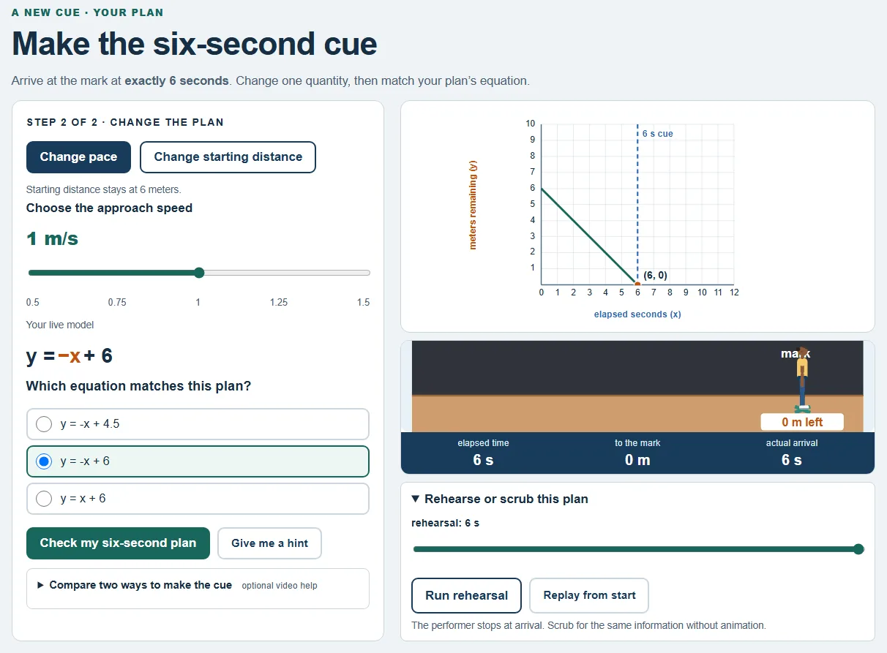

Pick stage or pool, predict, and name what each symbol means.
Algebra 1 · Self-paced Storyline 360 lesson
Hit Your Mark
Learners turn y = mx + b into a timing plan. Then the cue changes, and they have to fix it.
15–20 min · No sign-in · Desktop or mobile
Read the intro transcript
Three. Two. One. Hit your mark. On stage, a performer walks toward a tape mark on the floor. Every second, the distance to the mark drops three quarters of a meter. In the pool, a swimmer pushes off the wall and glides. Every second, the distance from the start grows one and a half meters. One number goes down. One goes up. But both of them are lines. The slope is the rate: how much the distance changes each second. The y-intercept is where the line crosses the y-axis, at zero seconds. Six meters from the mark on stage. Three meters from the start in the pool. That’s where you are when the clock starts. Change either one, and the whole line moves. Now, here’s the problem. The director moves the cue earlier. The coach wants a faster split. Keep the old plan, and you miss. So what do you change: the rate, or the start? Choose your scene. Build the model. Graph it, adjust it, and hit your mark.
The problem
Students can recognize y = mx + b and still not use it. They swap rise and run, mix up intercepts, or can’t explain slope. Here, the equation drives a decision.
The design
- The misconception is the activity. Learners fix a teammate’s graph that arrives at 4.5 seconds instead of 8.
- Feedback names the error. “You swapped rise and run. The horizontal change uses 4.”
- Help on request, built for access. Hints and captioned videos open when asked; graphs accept typed coordinates and everything works from the keyboard.
What learners do
Worked example, guided graph, a teammate’s error, then their own line.
The target time changes. Change the pace or the start to hit it.
Results

Not yet piloted. The lesson already records first-attempt accuracy on the cue change, help requests, and time to finish, so a first pilot can measure all three.